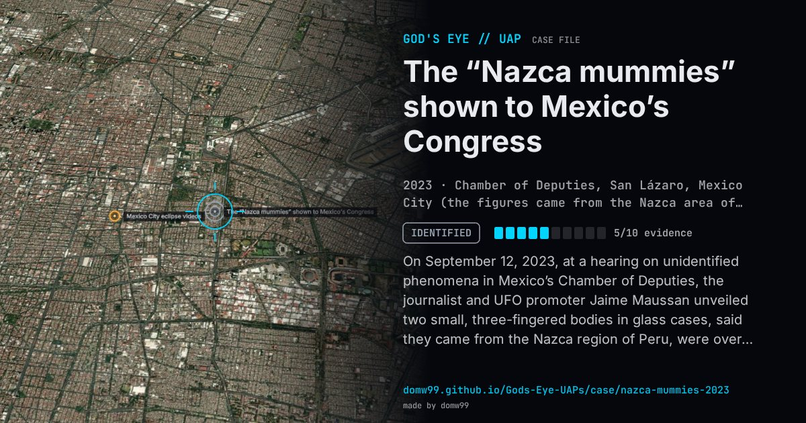

The “Nazca mummies” shown to Mexico’s Congress

On September 12, 2023, at a hearing on unidentified phenomena in Mexico’s Chamber of Deputies, the journalist and UFO promoter Jaime Maussan unveiled two small, three-fingered bodies in glass cases, said they came from the Nazca region of Peru, were over 700 years old and were “non-human beings”, and cited studies at the National Autonomous University of Mexico (UNAM), whose scientists denied that the university had endorsed any such conclusion. Mexico’s Congress took no position. Maussan had promoted similar bodies from Peru in 2017, which Peruvian officials then called recently manufactured dolls. In October 2023 Peruvian customs seized two more figures bound for a buyer in Mexico, and in January 2024 forensic archaeologist Flavio Estrada presented the analysis at Peru’s Ministry of Culture: the figures were dolls built from human and animal bones glued with modern adhesive, “not extraterrestrials”.
Explanation
Forensic specialists working for Peru’s prosecutors and Ministry of Culture examined seized figures and found them to be three-fingered dolls assembled from human and animal bones held together with modern glue; similar bodies promoted in 2017 had already been found to be recently made.
What was seen
Shape: Small three-fingered humanoid bodies
Witnesses: Members of Mexico’s Chamber of Deputies; the presenter Jaime Maussan
Duration: A congressional hearing
Sources
- CBS News — “Aliens” found in Peru are actually dolls made of bones, forensic experts declare
- 404 Media — the Mexican Congress alien mummies, explained